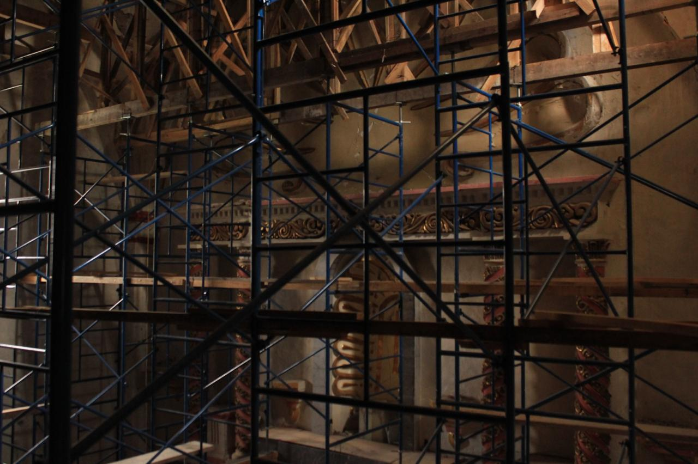

Reconstrucción histórica — Siglo XVI
El presbiterio
El lugar del altar y de la acción sagrada
El presbiterio es el espacio más sagrado del templo, pues en él se encuentra el altar, signo de Cristo y mesa del sacrificio eucarístico. Desde aquí se preside la celebración litúrgica y se realizan los ritos principales de la misa.
En la vida conventual y parroquial, este lugar expresa la centralidad de la Eucaristía. Todo en el templo conduce hacia este punto, donde la comunidad se une en la oración y en la alabanza a Dios.
El presbiterio después del sismo

El presbiterio durante los trabajos de restauración posteriores al sismo de 2017.